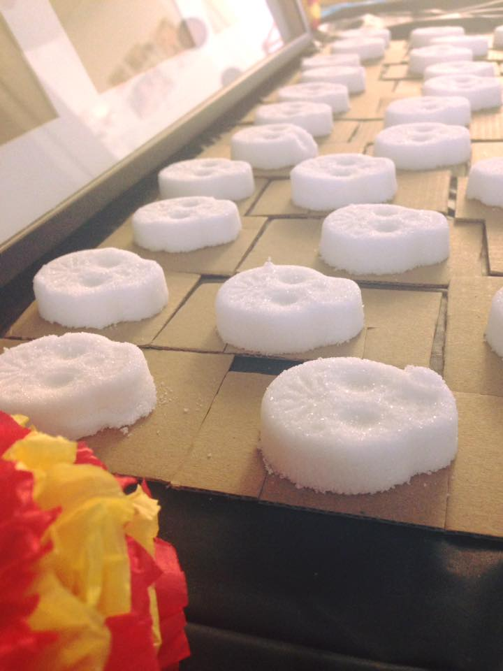

Yale STEAM saw exciting new collaborations this year, including Movimiento Estudiantil Chicano de Aztlán (MEChA), Yale’s chapter of the social and political activism group for the Chicanx/Latinx population, as well as with Hewlett-Packard, Inc. In addition, continuing the tradition of last year, Yale STEAM and the Yale Digital Humanities Laboratory hosted its second Beyond Boundaries Symposium. We hope to continue many more initiatives next year and to begin more STEAM traditions to our campus. Read more about them in the articles below.
Full STEAM Ahead:
Yale STEAM is in the process of growth and rebuilding. We envision next year to be of expansion, both in membership and also in the variety of workshops and events hosted for students of different majors, ranging from computer science to English. We hope to engage in more events at other STEAM chapters as well, and to continue encouragement of interdisciplinary learning.
Yale STEAM continued its collaboration with the Yale Digital Humanities Laboratory (DHLab) to present the second Beyond Boundaries Symposium, highlighting hybrid scholarship. The DHLab was founded in 2015, and since its inception has created a place for faculty and students to bridge digital applications with humanistic inquiries, going—as the name of the annual symposium suggests—beyond boundaries. The first Beyond Boundaries Symposium was hosted last year following a meeting of STEAM members with Peter Leonard, Director of the DHLab, and Catherine DeRose, Engagement and Outreach Manager. This year’s symposium took place on April 7th, 2017 at the Sterling Memorial Library Lecture Hall & Exhibition Room.
The day began with a welcome address by Peter Leonard, afterwards entering into series of lightning talks, where undergraduate and graduate students were given the opportunity to present their projects that highlight digital humanities and STEAM. Titles of talks include “Delinquent Migrations: Mapping Black Iterant Youth, Labor, and Incarceration in California, 1929-1939” and “Preserving History and Memory: Databasing American Public Sculptures.” These student projects shared a common theme—intertwining humanities with digital methods.
After student presentations, the symposium continued into a roundtable discussion moderated by Sarah Sukin (Yale ’19) and Jonathan Schroeder, postdoctoral associate researcher at the DHLab. At the table were Richard Prum, Ornithology, Ecology and Evolutionary Biology; Anna Zayaruznaya, Department of Music; Agnete Lassen, Department of Near Eastern Languages & Civilizations; Peter Leonard; and Lawrence Wilen, School of Engineering & Applied Science. Following this discussion, the event concluded with a poster session hosted outside the lecture hall showcasing more projects from the Yale community.
The video of this year’s Beyond Boundaries Symposium and the previous year’s can be found in this playlist.
In honor of Día de los Muertos, Yale STEAM collaborated with MEChA in an event at La Casa Cultural center at Yale University to explore the science of sugar crafting and the cultural significance of sugar skulls. Members of both clubs met a few days before the event to begin with the most important part: creating the sugar skulls. Using a mixture of meringue powder and granulated sugar held together with just the right amount of water, we packed the mixture into molds, allowing them to dry overnight.
On the day of the event, all students were invited to the cultural center where we first discussed the science of sugar at the molecular level in both its taste and its ability to meld into various shapes. Afterwards, we decorated the sugar skulls with colored frosting, and placed them on the embellished altar put together by students of MEChA. Students learned not only the cultural significance of sugar skulls, but the science behind these sweet pieces of art.

On February 2nd, 2017, Yale STEAM collaborated with Branford College, one of the 12 residential colleges of Yale University, to organize a College Tea, a tradition in which a renowned guest is invited to speak in a more intimate setting with students. Chanthia Ma (Yale ‘17) and Jessica Trinh (Yale ’20) organized the event with Branford administration and Randall Rode, Director of Campus IT Partner Relationships and Development, who communicated with Hewlett-Packard, Inc. (HP) and arranged for Doug Warner, Vice President and Global Head of Tech Vision, Strategy and Incubations, to visit.
Yet, some components of this Branford College Tea departed from its traditional style. Warner would first show a PowerPoint presentation to students at the event, a feature generally uncommon given the nontechnology characteristic of College Teas—but very appropriate given the nature of his discussion—before the usual seated Q&A discussion.
The Branford Common Room was filled to the brim as students packed in to hear about Warner’s experience implementing design strategies at HP, Inc. Drawing a crowd of students from science & arts, technology, and entrepreneurship, the event was moderated by Steve Blum (Yale ’74), Senior Director of Strategic Initiatives at the Associate of Yale Alumni, as well as a Branford Fellow.
The main theme highlighted in Warner’s presentation was “disruptive innovation”, a phenomenon when a new company’s idea ventures beyond the already accomplished. Noting the success of various companies that began with bold concepts, such as Uber, he advised on the benefits—and risks—of pushing an idea to the limit. It was a College Tea that inspired students not to back down to challenges, but to run full speed ahead.